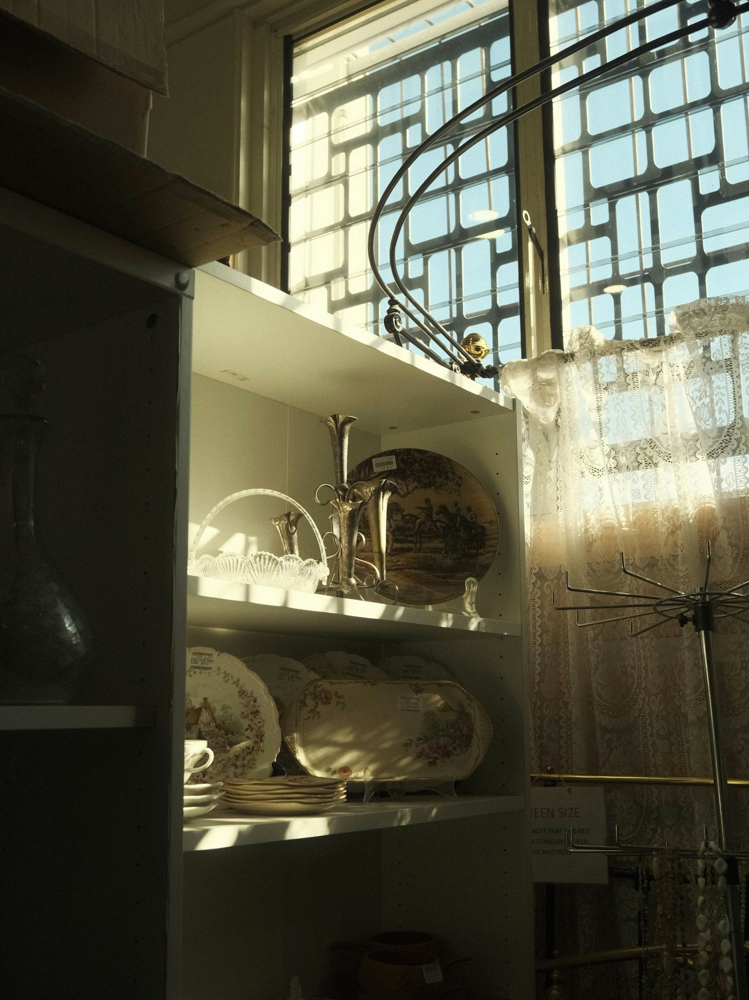
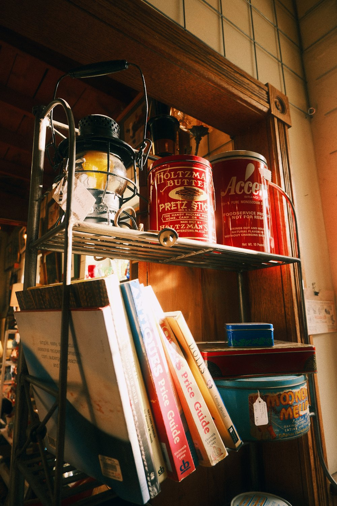

Antiquitäten · Torigoe, Tokyo
鳥越の、
doremifaで
古いものと出会う。Old things,
found at
doremifa.
ヨーロッパの古い物、日本の古道具、雑貨、アート。2階には小さなギャラリースペースもあります。European antiques, old Japanese tools, sundries and art — with a small gallery upstairs.

※写真はイメージです（公開時はお店の写真に差し替えます）Sample photo — to be replaced with the shop’s own.
do · re · mi · fa
鍵盤を押して、店内をのぞく。Press a key to look around.

Upstairs
2階は、小さなギャラリー。A small gallery upstairs.
店内の2階は小さなギャラリースペースです。版画のワークショップなども開催しています。The second floor is a small gallery space. The shop also hosts printmaking workshops.
- Iヨーロッパの古い物European antiques
- II日本の古道具Old Japanese tools
- III雑貨・アートSundries & art
- IV版画ワークショップPrintmaking workshops
Commission
オーダー油絵、
承ります。Custom oil paintings.
うちの子（ペット）や思い出の風景を、油絵に。描いてほしいものを選ぶと、ご相談メールができあがります。Your pet, a favorite place — in oils. Choose a subject and we'll draft the request.
描いてほしいものSUBJECT
用途FOR
※ サイズ・価格・納期は正式公開時にお店の情報を掲載します。過去の作品は @doremifa_painting で。Sizes, prices and timing to be confirmed. See past work at @doremifa_painting.
Visit
お店への行き方Find us
- 住所Address
- 〒111-0054 東京都台東区鳥越1-17-31-17-3 Torigoe, Taito-ku, Tokyo 111-0054
- 営業日Open
- 木 12:00〜17:00
金・土 12:00〜18:00Thu 12:00–17:00
Fri & Sat 12:00–18:00 - doremifa.torigoe@gmail.com
- Online
- doremifa.thebase.in
- @antique.doremifa
- 評価Rating
- ★4.6 （Googleマップ）(Google Maps)